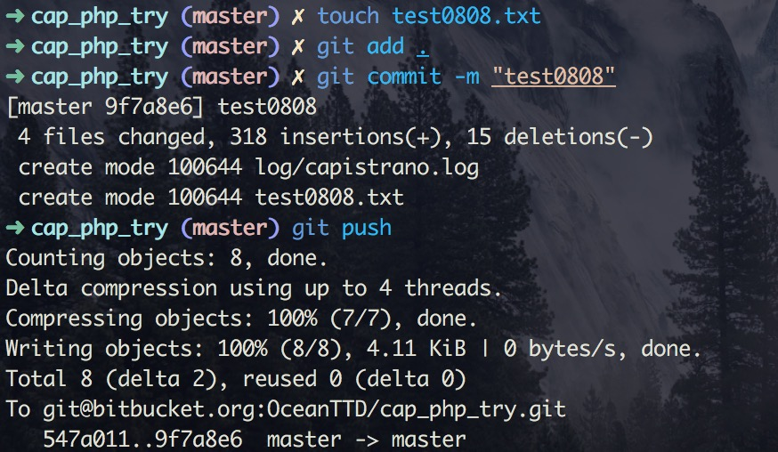
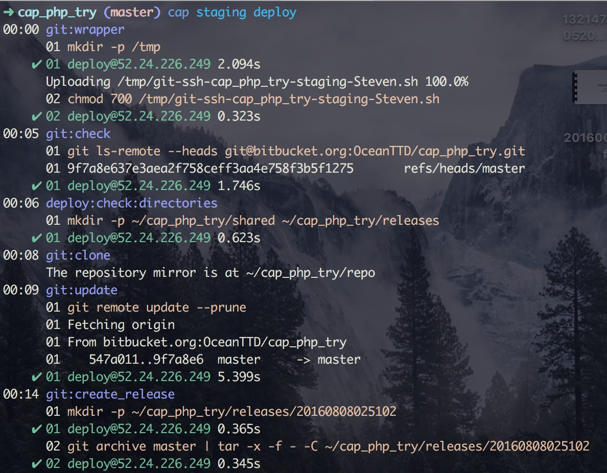
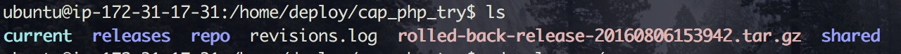
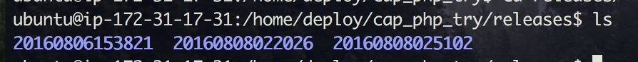

使用 Capistrano 自動化佈署php程式
EZprice@Steven
要解決的問題
使用git 管理時需要多幾道手續，使用自動化佈署節省操作步驟。
專案對照佈署的伺服器記錄在Cap設定檔中，程式即文件。
capistrano 具備將deploy 程式碼回溯道穩定版本的功能。
實際佈署情形
加入新的檔案並且push上伺服器

輸入cap staging deploy，佈署上測試伺服器

如果要佈署上正是伺服器，cap production deploy
佈署完結果
 
回溯(rollback)